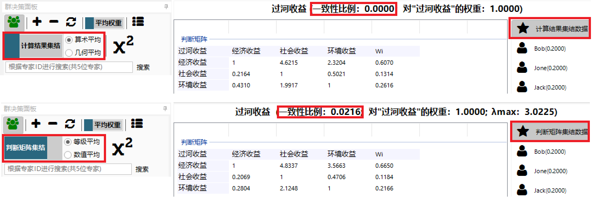
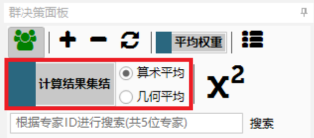
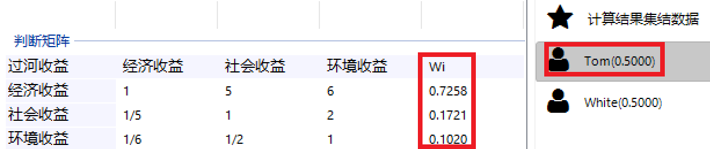
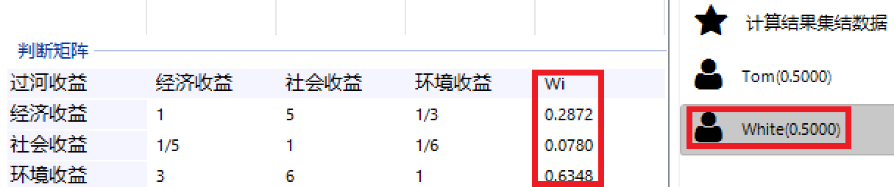
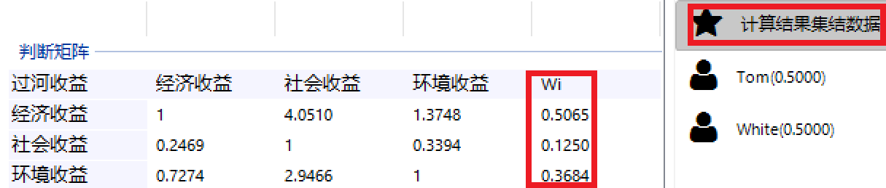
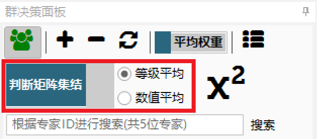
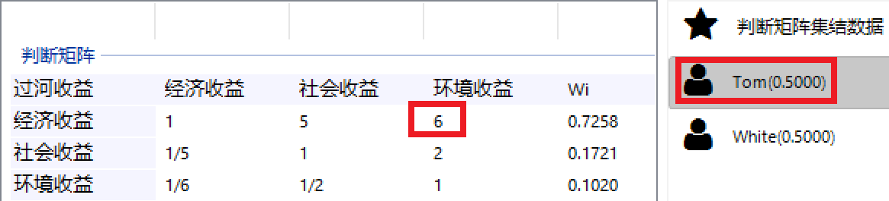
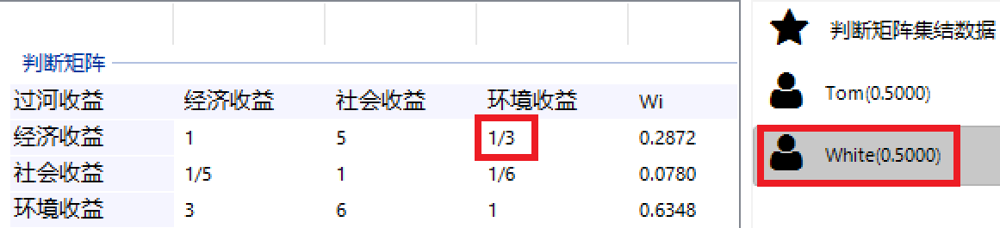
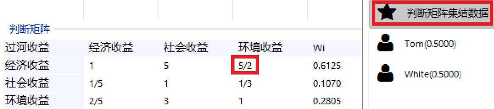
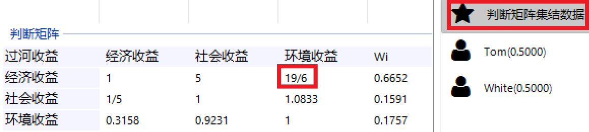

转载自张建华的博客, 原文链接: http://www.jeffzhang.cn/group-data-in-article/.
概述
群决策数据集结是将多位专家给出的决策数据综合起来，并以此为基础进行计算得到群体决策结论。
yaahp中群决策专家数据集结方式有四种，这四种又可以分为两类：
计算结果集结
判断矩阵排序权重加权几何平均；
判断矩阵排序权重加权算术平均；判断矩阵集结
判断矩阵数据等级平均；
判断矩阵数据数值平均；
计算结果集结
简介
首先对每个专家的判断矩阵进行计算，得到各个判断矩阵的排序权重，然后再对所有专家的排序权重（计算结果）利用算术/集合平均完成数据集结，最后利用集结后的判断矩阵排序权重计算总排序权重。
yaahp中的设定
计算结果集结是yaahp的默认群决策数据集结算法，群决策面板设定如下图所示。

示例说明
下面结合计算数据，对计算结果集结具体说明。
假设两位专家Tom和White参与群决策计算，他们的某个判断矩阵(过河收益)数据如下面两个图所示。


对于某个确定的判断矩阵，计算结果集结首先计算得到各个专家此判断矩阵的排序权重Wi，如上图中红框中两位专家的Wi列数据。
将对应的Wi加权平均（两位专家权重设定为平均分配，即均为0.5），得到两位专家集结后的Wi，如下表所示。
| 要素 | Wi |
|---|---|
| 经济收益 | 0.5065 |
| 社会收益 | 0.1250 |
| 环境收益 | 0.3684 |
注：Wi之和不等于1.0是由于浮点数显示只保留小数点后四位的原因。
计算得到Wi后，再计算出判断矩阵中上三角元素的值，就可以得到yaahp集结后的判断矩阵数据，如下图所示。

对各个专家的所有判断矩阵用这种方法进行集结，就可以得到一组集结后的所有判断矩阵的Wi，最后再根据层次模型结构就可以计算出总排序权重。
计算结果集结后的判断矩阵完全一致
因为判断矩阵中各元素的值是根据Wi计算出来的，所以一致性比例一定是0.0，完全一致。但这个一致性比例是没有实际意义的，也即不能用它来说明决策数据的一致性。
判断矩阵集结
简介
首先对每个专家的判断矩阵中的对应项进行等级/数值平均，得到一组集结后的判断矩阵，然后计算各个矩阵的排序权重Wi，最后在计算总排序权重。
等级平均和数值平均的差别在于对小于1的两两对比等级的处理。等级平均认为小于1的两两对比值之间的差距也是“1”，而数值平均小于1的等级差距也小于1。例如等级平均认为1/2和1/4之间相差与2和4之间的差距相同，而使用数值平均时，1/2与1/4之间的差距为1/4，而2与4之间的差距为2。
yaahp中的设定
计算结果集结是yaahp的默认群决策数据集结算法，群决策面板设定如下图所示。

示例说明
下面结合计算数据，对计算结果集结具体说明。
假设两位专家Tom和White参与群决策计算，他们的某个判断矩阵(过河收益)数据如下面两个图所示。


两两比较项“经济收益 vs 环境收益”数据使用红框圈了起来，用这项数据来说明等级平均和数值平均的不同。
- 等级平均
等级平均的集结结果如下图所示。

对于两两比较项“经济收益 vs 环境收益”，Tom给出的决策数据为6，而White给出的决策数据为1/3。等级平均后的值为5/2。
- 数值平均
数值平均的集结结果如下图所示。

对于两两比较项“经济收益 vs 环境收益”，Tom给出的决策数据为6，而White给出的决策数据为1/3。数值平均后的值为19/6。
集结后的判断矩阵的一致性比例
一致性简单地说就是决策者在给出多个相关联的决策是否前后逻辑相符、一致，只有针对一个具体的决策者才有意义。
判断矩阵集结通过一些计算把各个专家的数据汇总在一起，只是为了计算群决策的总排序权重而做的数据处理，这些集结后的判断矩阵数据已经没有前后逻辑是否相符或一致的意义了。 所以集结后的数据是没有实际意义的，只具有计算上的意义，不能用它来说明决策数据的一致性。
例如两个专家的某个判断矩阵均满足一致性要求，也就是按这两位专家各自的思考给出的决策都是一致的，但由于这两位专家给出的各项决策数据有一定差异（例如之前数据中某项数据Tom给出6，White给出1/3），最终判断矩阵集结后得到了一个不一致的判断矩阵，这种情况可以认为两位专家这个判断矩阵数据不合格吗？或者反之两位专家数据都不满足一致性比例，但集结后的判断矩阵满足一致性比例，能认为两位专家的数据合格吗？
论文中如何说明群决策所依据的数据是有效的？
了解了集结后的判断矩阵数据及其一致性比例数值只在计算时有作用，并没有实际意义，就可以得出集结后的判断矩阵数据和一致性比例无法为论文提供有效的数据依据的结论，所以不应该把这些数据放在论文中。
那要如何在论文中说明群决策所依据的数据是有效的呢？应该使用所有的原始数据，也就是所有参与决策的专家判断矩阵及其一致性比例数据。只有所有专家的所有判断矩阵都满足一致性要求，才能认为群决策所依据的数据是有效的，也就是在论文正文中说明所有判断矩阵均满足一致性比例（或修正后满足一致性比例），如果必须提供完整数据，可以在附录中列出所有的判断矩阵数据。
要求所有专家的所欲判断矩阵都满足一致性要求一般无法做到，但可以利用yaahp提供的一致性自动修正功能修正不一致判断矩阵。如果使用yaahp的判断矩阵检查功能给出的建议是可以自动修正（绿色图标），一般可以让yaahp在计算时自动修正一致性不需要用户额外的处理。 关于自动修正的基本思路、自动修正是否合理、自动修正对数据有怎样的要求，请参考文章判断矩阵数据检查。
总结
在论文中列出集结后的判断矩阵及其一致性比例数据作为合理群决策的数据依据是不合适的，应该将所有参与群决策的专家的所有判断矩阵及其一致性比例数据作为数据依据。
群决策所有专家的判断矩阵全部写在论文正文中会占用太大篇幅，一般没法这么做。只需要在论文正文中说明所有判断矩阵均满足/修正后满足一致性比例，如果必须提供完整数据，将判断矩阵数据作为附录部分提供。
Copyright
本文版权归博主张建华(Jianhua Zhang、两招)所有，转载或引用请注明出处。